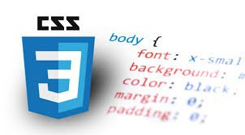

CSS stands for Cascading Style Sheets. It is a style sheet language which is used to describe the look and formatting of a document written in markup language. It provides an additional feature to HTML. It is generally used with HTML to change the style of web pages and user interfaces. CSS is used along with HTML and JavaScript in most websites to create user interfaces for web applications and user interfaces for many mobile applications. You can add new looks to your old HTML documents. You can completely change the look of your website with only a few changes in CSS code.
A CSS rule set contains a selector and a declaration block.
Selector indicates the HTML element you want to style. It could be any tag like h1, title etc.
The declaration block can contain one or more declarations separated by a semicolon. For the above
example, there are two declarations:
color: yellow;
font-size: 11 px;
Each declaration contains a property name and value, separated by a colon.
A Property is a type of attribute of HTML element. It could be color, border etc.
Values are assigned to CSS properties. In the above example, value "yellow" is assigned to color property.
Before CSS, tags like font, color, background style, element alignments, border and size had to be repeated on every web page. This was a very long process. For example: If you are developing a large website where fonts and color information are added on every single page, it will be become a long and expensive process. CSS was created to solve this problem. It was a W3C recommendation.
CSS style definitions are saved in external CSS files so it is possible to change the entire website by changing just one file.
CSS provides more detailed attributes than plain HTML to define the look and feel of the website.